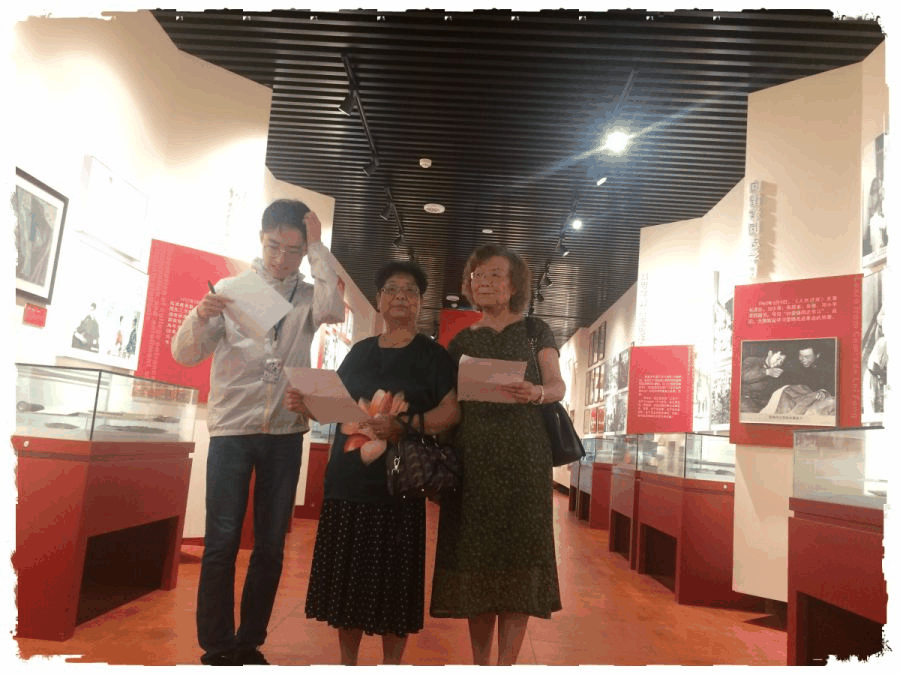
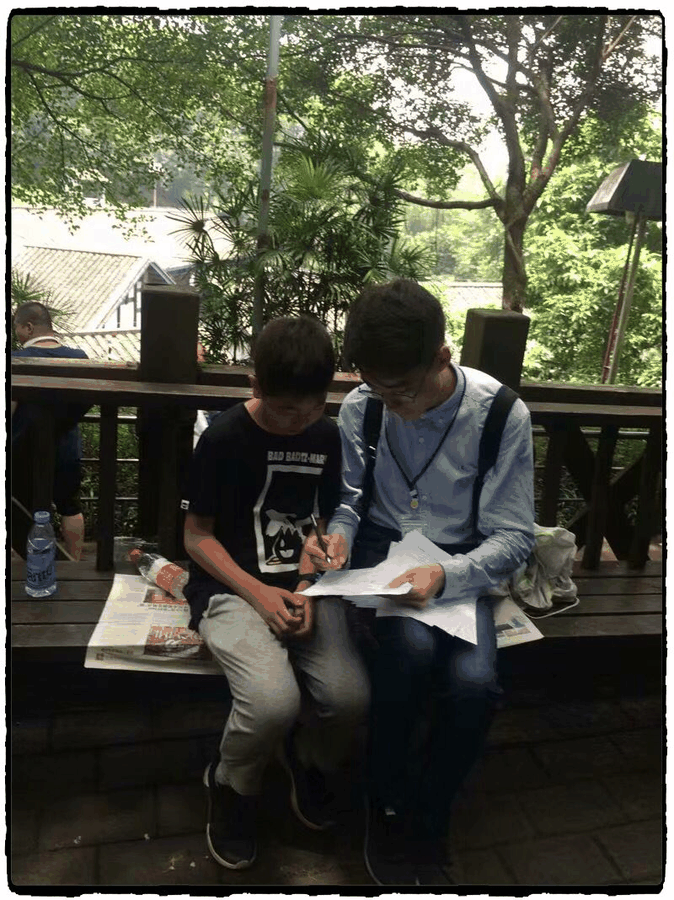

【渝传尺素•十二】和南唱喏，道声好久不见
行者
王耿


犹记裕泰茶馆里“莫谈国事”的条幅高悬于众宾客头顶，皆视历史为那洪水猛兽择人而噬，于我何益谈之作甚？
当民众在歌乐山烈士陵园的主墓上拔蕙兰卖钱，在红岩革命历史博物馆禁止喧哗的牌子下高谈阔论，不见其对历史的点滴敬畏，更无对先贤的最起码的尊重。历史俨然成了可以随意糟践扭曲的饭后谈资。一千个人心中自可以有一千个哈姆雷特，但若众人皆是提笔者，历史的价值意史将失去写进书本的资格。

历史是重庆市历史名人馆先人呐喊的荡气回肠。当明朝戚继光在马上呼喊，秦良玉听见了，这位重庆女将以白杆兵拒清军于山海，令抱头鼠窜、喑哑不言的时人惊骇；当清末谭嗣同在狱中苦吟，邹容听见了，这位重庆书生用“赫赫谭君故，湘湖士气衰。惟冀后来者，继起志勿灰”遥相祭奠，撰写《革命军》令世人汗颜；当战时百姓在枪下哭泣，革命英雄听见了，他们前赴后继改写时事，令山河颜色终变。
历史是在渣滓洞、白公馆有“请转告党，我做到了党教导我的一切，在生命的最后几分钟，仍然这样。”的铮铮誓言。当一以贯之的生活态度撞见死亡，恪守笃行的价值取向爱上贪嗔痴妄，又有谁记得半拍之前自己的信仰。
于红岩前学红岩，在先贤后效先贤。金永华金妈妈用三个应该不应该诠释他心间党人的模样，蓝蒂裕蓝先生用“变秋天为春天的精神”将党性借助文字昭彰。

巴山渝水出新韵，诗意淳风入我怀
不忘初心，砥砺前行。我们缅怀了渣滓洞、白公馆、歌乐山烈士陵园中逝去的同胞先烈，领略了川剧博物馆、民俗文化村里的巴渝文化，重温了重庆历史名人馆、红岩革命历史博物馆中的峥嵘岁月。
正是历代先贤们的悲欢与功过，重庆厚重的文化外层得以积累，一点一滴蕴积有情。
巴渝文化走过了三千年历史的古道，海纳百川兼收并蓄，悄然间已成多情与神奇交辉的大美上品，化作了豪放与沉郁兼具的宏伟史诗。七天的时间，行者无疆带我走近走进了巴渝文化的卷帘门，保护与传承的决心在心间生根发芽。
感谢、感慨、感恩、感怀
行者无疆、莫失莫忘。
来源丨行者无疆实践团
文字丨王耿
排版丨邓子孚
审核丨邓子孚 段智然
视频丨陈辉
行者无疆实践团
QQ：2758025831

随行者一起认识世界
长按二维码